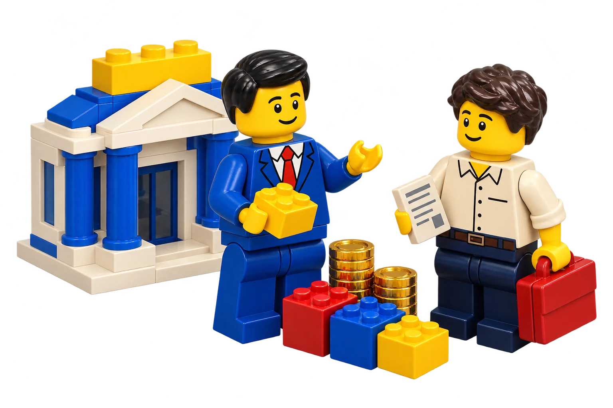

BRING YOUR DOCUMENTS
放進你的帳單。
本機後端接收支援版型的文字 PDF 或標準 CSV。未知版型、掃描與加密文件會明確提示，不猜數字。
銀行對帳單 / 信用卡 / 薪資單
把銀行帳單、信用卡與薪資放進同一個工作區。
先核對每一筆，再看收支、配置與目標，
讓數字回到你的生活裡。
先用合成資料體驗，不必提供任何帳單。
正式文件解析與資料庫，需啟動本機後端。

整理帳單不該停在一堆檔案。
讓每筆確認過的資料，走到真正有用的地方。
本機後端接收支援版型的文字 PDF 或標準 CSV。未知版型、掃描與加密文件會明確提示，不猜數字。
核對日期、摘要、金額與分類；疑似重複會標示，確認入庫前再次檢查。來源欄位留著，方便往回查。
已確認的交易更新收支與分類預算；帳戶快照、持倉和貸款分開計算，避免把流水再加成一筆資產。
點選下方任何一頁，即可進入可操作的合成資料體驗。每個頁面都有自己的工作，也有共同的資料。
認識流程、資料與支援範圍。
01 / OVERVIEW財務總覽摘要、淨值、配置和可自訂面板。
02 / DOCUMENTS帳單匯入解析、覆核，確認後再入帳。
03 / TRANSACTIONS交易明細搜尋、篩選、編輯與來源回查。
04 / BUDGETS分類預算設定額度，跟著實際支出更新。
05 / CASH FLOW現金流看月份走勢與帶正負值的數據。
06 / ACCOUNTS帳戶與資產帳單快照與手動資產分開標示。
07 / PORTFOLIO投資組合手動估值、目標配置與 XIRR。
08 / LIABILITIES負債與帳單貸款攤還、應繳與提醒記錄。
09 / SAVINGS儲蓄目標把備用金、旅行或進修存起來。
10 / DAILY NEWS每日新聞AI 與財經兩份整理，保留來源。
11 / MARKETS股市資訊報價、歷史、單位與更新狀態。
12 / ASSISTANT財務助理本機資料查詢，可選雲端解讀。
13 / PREFERENCES設定與備份主題、服務設定、排程與匯出。
不用在多張表格之間來回切換。
圖表保留單位、日期與數據表；AI 解讀也要有可核對的範圍。
這是原生 SVG 功能示意。正式工作區使用已確認數據；退款可保留負值，資產配置含負值時不硬畫圓餅。
在工作區切換今天、過去 7 天或過去 30 天，與前一個等長期間比較。選擇啟用雲端後，再以彙總資料產生財務解讀。
合成範例｜未呼叫 AI
十月收入 72,000 元，支出 33,000 元，結餘 39,000 元。這只能描述已記錄的數字，不能證明你所有帳戶都已完整涵蓋。
資料不完整時，先補來源與日期，比急著做結論更有用。
合成範例｜可核對的下一步
上方只是功能說明與合成範例。實際 AI 解讀需要有效服務 Key、明確同意與可用的本機後端；生成文字仍需核對。
把外部資訊和你的個人帳本分清楚。
缺少報價、來源不足或更新失敗時，都有自己的狀態。
從公開來源取得消息，再由可選 AI 整理重點與重要原因。每則保留發布時間、原始連結與來源；來源不足就少幾則，不湊滿。
此區是功能說明，並非今日新聞。靜態體驗不連線生成新聞。
台灣、美國、ETF、指數與個別股票分開查看。切換標的看已有歷史，或單獨更新這個標的；數據不足時不補造曲線。
體驗模式市場數字為固定合成資料；真實來源需後端、網路與所需權限。不是即時交易服務。
不要求銀行綁定，不索取網銀密碼。
帳見的核心是你主動提供、核對並管理的資料。
本機優先不等於自動加密，也不表示雲端功能沒有傳送。每一種模式，都有自己的保存與使用範圍。
修改保存在此瀏覽器。先試功能，再決定是否啟動正式後端；不要把公開展示當作敏感資料保險箱。
原始 PDF 不留存，保留辨識欄位與核對資料。本地資料庫未加密，請搭配裝置與磁碟保護。
需要另外設定有效服務 Key。財務解讀使用所選期間的彙總；對話中你輸入的問題也會傳送，請勿貼敏感明細。
可匯出 JSON 與 CSV。JSON 一鍵還原尚未提供；完整本機備份需停止服務後保存資料庫檔。
兩種入口，使用同一套產品介面。
資料模式與可用服務會清楚標示。
從合成資料開始操作總覽、分類預算、目標、配置與股市圖表。不需要任何帳單或 API Key，沒有銀行串接。
開啟合成資料體驗 →取得完整專案、依專案說明安裝依賴並啟動 Python 後端。使用隨附合成文件測試匯入覆核，再整理自己的資料。
能做什麼，不能做什麼，
都應該在開始之前說清楚。
目前支援已驗證的文字型 PDF 版型與標準 CSV。未知版型、掃描、圖片 OCR 與加密文件不在完整支援範圍；失敗會提示，不用猜測值建立交易。
不是。落地頁使用積木人物插圖與原生 SVG 合成數據展示，已標明合成資料。點「開啟體驗」可進入真正可操作的網頁工作區；這些示意圖不代表真實使用者財務或瀏覽器測試證據。
本機規則查詢與帳本統計不需要生成式 AI。雲端解讀與 AI 新聞摘要需有效服務 Key，與 ChatGPT 訂閱額度分開；實際費用依服務供應商計算。公開來源也可能遇到連線或權限限制。
每個類別最多五則，不是保證五則。只使用時效與來源能核對的消息；來源不足、連線失敗或無法生成時，保留明確狀態，不用舊聞或假摘要湊數。
市場資訊頁與你的手動持倉估值分開。你需要在投資組合更新價格、匯率與估值日期。配置差額和 XIRR 是依輸入資料的試算，不代表即時成交、完整已實現績效或買賣建議。
靜態體驗可操作合成帳本，瀏覽器清除資料後修改可能消失。本機資料庫功能需啟動後端；新聞、真實行情與雲端 AI 需要網路。任何模式都應自行備份，不承諾跨裝置同步或永久保存。
從一份帳單、一個預算，或一個想存下來的目標開始。